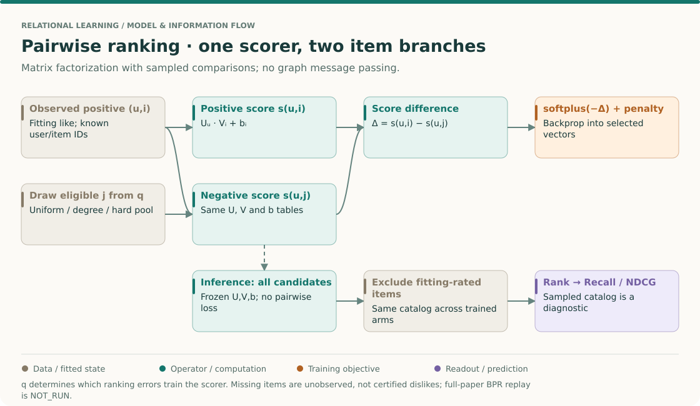
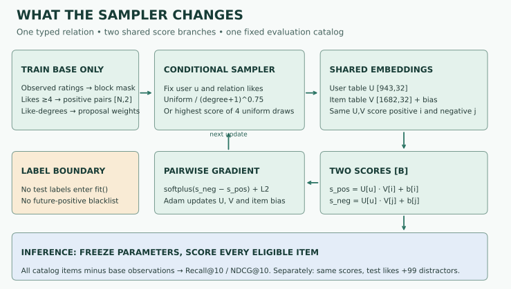

Year 3 · Quarter 2 · Lesson 097
Negative sampling: which missing links should teach the model?
Student notebook · Executed solution · Reference · Full reproduction contract
1 · Retrieve before reading¶
Write three answers before opening the explanation: (1) Why are customer 10 and product 10 different nodes? (2) Why does adding a held-out edge's reverse still leak its label? (3) Can a model's ranking score improve without changing a single parameter?
Check after writing
Identity includes the node type. A reverse relation encodes the same held-out fact. A ranking metric can increase when the candidate set loses competitors, even with frozen scores. Revisit L095 if any answer was uncertain.
The bridge. L096 preserved observed database facts in a typed graph. L087 scored possible links. Training that scorer needs comparisons: what should score lower than an observed positive? The choice determines which mistakes receive gradient updates. This is part of our mission to test relational models fairly; changing the negatives can change the task while the architecture remains identical.
Route: sections 2–6 take about 25 minutes. Implement the three notebook TODOs, then execute the full experiment in section 7; runtime is additional. Sections 8–9 are the interpretation and written defense. Ask the agent for a hint or a slower worked trace whenever a step is unclear.
The big picture · the sampler helps define the objective¶
THE BIG PICTURE · 097 / LEARNING FROM COMPARISONS
Bring forward: L095 fixed the fitting graph and recommendation candidates. Now learn a scorer from positive–unobserved comparisons. Follow: positive pair + conditional negative draw → shared scorer → score difference → pairwise loss → full-catalog ranking. Carry forward: L098 samples context instead of supervised comparisons; these are separate forms of sampling.
L095: candidate eligibility · L087: encoder and decoder · L098: sampled context · Sequence map

Follow the shared parameters¶
There are two score evaluations but one scorer. The user vector appears in both, and the positive and negative items are rows of the same item table. Write the difference as Δ = U_u · (V_i − V_j) + b_i − b_j. This makes the comparison explicit: the loss trains a relative ordering for one user. A user-only additive bias would cancel from this difference, which is why it would not help distinguish that user's two items.
The BPR paper, §4 and §5.1 supplies the pairwise-ranking rationale and matrix-factorization handoff. The course experiment's optimizer, regularizer scaling and candidate policies are documented separately below. “Uses the BPR loss” is a narrower claim than “reproduces LearnBPR.”
Differentiate one pair before training many¶
Take a scalar user vector U=2, positive item V_i=1, negative item V_j=.5, and zero biases. Scores are 2 and 1, so Δ=1 and the data loss is softplus(-1)≈.3133. The derivative with respect to Δ is approximately −.2689. Therefore the derivatives with respect to U, V_i and V_j are approximately −.1345, −.5379 and +.5379. Gradient descent raises the positive item vector and lowers the negative item vector in this example.
The general user gradient is -sigmoid(-Δ) × (V_i−V_j). Its direction depends on which negative was sampled. Changing q therefore changes more than computational cost: it changes the weighting of update directions. These numbers omit the declared regularizer to isolate the data term, and use one pair rather than a batch mean.
Make the target expectation explicit¶
Suppose the eligible candidates are a and b, and their pair losses are .2 and .8. Uniform sampling has expected loss .5. Sampling probabilities .9,.1 give .26. Neither number is a biased calculation of its own declared expectation. They are different expectations. To estimate the uniform target with the latter sampler, importance weights are .5/.9 and .5/.1; the weighted expectation returns .5, with potentially worse variance.
Coverage matters. If q assigns zero probability to b while the target assigns positive probability, no finite importance weight can recover b's contribution from those samples. A hard-negative selector adds another issue: its distribution changes with the current model. The lab deliberately compares uncorrected policies and labels them as different training objectives.
Keep the evaluation question fixed¶
At inference, freeze the scorer and rank every eligible item under the main protocol. Training may have seen only one comparison item at a time, but that does not justify evaluating only one comparison. Conversely, evaluation candidates must not flow backward into the fitting exclusion mask unless the experiment explicitly allows that information. An unobserved item can later become a held-out positive; that uncertainty is part of implicit feedback.
Predict first: can an item with the smallest score still be a harmful negative?
Yes. Its true preference is unobserved, so an easy negative can still be a false negative. “Hard” describes the current scorer's difficulty, not the correctness of the assumed comparison. A high score increases the pairwise loss but does not certify a negative label.
Bridge to L098. Write three different random variables: the negative item j, the sampled message neighborhood, and the evaluation candidate subset. They affect the objective, encoder computation, and reported metric respectively. Keeping their seeds equal does not make them the same intervention. Reproduce the scalar gradients tomorrow, then explain which table rows receive updates and why the same trained weights can produce different sampled-catalog metrics.
2 · Missing means unobserved¶
Take the relation user → likes → item. User 0 has fitting observations for items 0 and 1. Item 2 will appear as a positive in the test file, but the training process does not know that. Items 3 and 4 have no observed interaction for this user.
| Candidate | Information available during fitting | Sampling decision |
|---|---|---|
| user 0 → item 0 | Observed fitting interaction | Exclude |
| user 0 → item 1 | Observed fitting interaction | Exclude |
| user 0 → item 2 | Unobserved during fitting | Eligible; may be a false negative |
| user 0 → item 3 or 4 | Unobserved during fitting | Eligible; truth unknown |
| user 0 → user 4 | Wrong destination type | Reject before sampling |
A negative training example is an assumption used by an objective, not a certified dislike. In the lab, ratings ≥4 are positive likes. We exclude all fitting-rated items from the negative pool, including lower ratings, to preserve L095's unobserved-item recommendation task. Using observed low ratings as explicit negatives is a different defensible task, but not this experiment.
Separate three information policies. Training excludes pairs known from fitting data. An offline static graph benchmark may explicitly authorize a global positive blacklist, including held-out facts; that uses privileged label knowledge and must be stated. Temporal prediction cannot silently use future links to construct today's training pool. Evaluation may use held-out relevance to compute metrics or build a declared candidate set, but those labels must not flow back into fitting. Our fit(base, strategy, seed) has no test argument.
Even a global blacklist cannot prove that all remaining pairs are false. Some true links have never been recorded. For an FK relation, schema constraints also matter: corrupting an order's one known buyer describes a mutually exclusive alternative; corrupting a possible future purchase makes a different kind of assumption.
3 · Define the candidate universe before the distribution¶
For each positive (u, likes, i), hold the source and relation fixed and replace the destination. Let O_u be items observed in fitting and let C_u = all_item_IDs − O_u. Typed IDs are local: user 0 → item 0 is legal if unobserved. It is not a homogeneous self-loop. A sampler must preserve the source, stay in the destination type, and exclude O_u.
For a five-item worked example, let fitting item like-degrees be [3, 1, 0, 8, 1] and let user 0 have observed items {0,1}. Then C_0 = {2,3,4}:
- Uniform: every candidate gets probability 1/3.
- Degree-weighted: use weight
(degree + 1)^0.75, then renormalize onC_0. The weights are1, 9^0.75, 2^0.75; probabilities are approximately.127, .660, .214. The added one gives zero-degree items nonzero support. This exponent and smoothing are explicit course choices. - Hard: draw four uniform candidates with replacement, score them using the current model, and keep the largest score. This searches for a mistake the model currently finds plausible. It costs extra scoring and can emphasize unknown positives.
Predict: raising the degree of item 3 changes the degree sampler but leaves uniform unchanged. Blocking item 3 removes it entirely and renormalizes the others. A high score does not prove an item is a good negative. In a four-draw hard pool, duplicates are allowed; it need not contain four distinct items.
The visible implementation creates a dense q[user,item] matrix for clarity. This costs O(number of users × number of items). The full lab is small enough; a production sampler would use sparse exclusion with bounded retries or another exact conditional sampling method. If C_u is empty, the implementation raises an explicit error. It never loops forever or silently emits a positive.
weights = (degree + 1) ** 0.75 # training like-degrees only
mass = (~blocked) * weights[None, :]
if (mass.sum(axis=1) == 0).any():
raise ValueError("No valid negative for at least one source")
q = mass / mass.sum(axis=1, keepdims=True)
PyG is an API, not the information policy. In PyG 2.6.1, passing num_nodes=(n_users, n_items) selects a bipartite universe. The library excludes supplied edges; it does not discover your omitted positives. Its global negative_sampling does not promise one source-preserving replacement per positive, and requested counts can be approximate. The lab checks its complete tiny-graph complement but implements our conditional sampler explicitly. See the pinned implementation.
4 · Trace the whole computation¶

The scorer deliberately stays simple so the negative distribution is the intervention. Two separate embedding tables hold U ∈ R^(943×32) and V ∈ R^(1682×32); items also have scalar biases. For batch size B, user and positive-item lookup tensors have shape [B,32], scores have shape [B], and a hard pool has shape [B,4]. Both score branches share the same parameter tables:
s(u,i) = dot(U[u], V[i]) + b[i]
This is matrix factorization on a typed relation, not a new heterogeneous GNN. A GNN encoder could supply the embeddings later, but changing the encoder here would obscure the effect of sampling. When transferring this to an R-GCN/HGT model, keep both the forward and reverse target edges out of the held-out message graph.
Primary reading: Rendle et al., BPR, §4.1–4.3 and §5.1. The paper derives a pairwise preference objective and uses a score difference for matrix factorization. Our teaching loss is the negative log-sigmoid of that difference, computed stably:
positive_score = (U[u] * V[i]).sum(-1) + b[i]
negative_score = (U[u] * V[j]).sum(-1) + b[j]
loss = torch.nn.functional.softplus(negative_score - positive_score).mean()
If both scores are zero, the loss is log(2) ≈ .6931. If the positive is 2 and the negative is −1, the loss is log(1+exp(−3)) ≈ .0486. The derivative with respect to the positive score is −sigmoid(s_neg−s_pos) before batch averaging; the negative-score derivative has the opposite sign. Gradient descent therefore raises the positive relative to the sampled negative. The test checks both the number and the gradient signs.
The trainer adds .0001 × mean(||U_u||² + ||V_i||² + ||V_j||² + b_i² + b_j²) and uses Adam at .01 for ten epochs. These optimizer, regularization scaling, dataset, batching and budget choices belong to our experiment. We do not claim to replay the paper's LearnBPR bootstrap-SGD protocol or tables.
5 · Changing q changes what gets learned¶
For a fixed positive (u,i), our expected data loss is:
L_q(u,i) = Σ[j in C_u] q(j|u) × softplus(s(u,j) − s(u,i)).
Uniform and degree sampling put different weights on the same possible mistakes. Neither automatically estimates the other's objective. If the desired target distribution is p, an importance-weighted term p(j|u)/q(j|u) gives an unbiased estimate of that target expectation when q covers its support; large ratios can produce high variance. The lab intentionally applies no such correction: it measures the effect of changing the training distribution itself.
The hard arm chooses a candidate using detached current scores. Gradients pass through the chosen pair's loss, not through the discrete selection. Because this policy depends on the evolving scorer, it is not the fixed degree distribution. Its four-candidate scoring budget is larger even though epochs, positive exposures and optimizer updates match.
Trace one step. Suppose the positive score is 1 and candidate scores for items [2,3,4] are [.2,1.4,.7]. Their pairwise losses are approximately [.371, .913, .554]. Uniform spreads updates evenly. Degree sampling visits item 3 most often under the worked degrees. A hard draw containing item 3 selects it. If item 3 is actually an undiscovered positive, the strongest gradient can reinforce a wrong assumption.
6 · Do not confuse training negatives with evaluation candidates¶
Freeze a scorer with a relevant item at rank 20 in a catalog of 1,000 candidates. Full-catalog Recall@10 is zero. If you keep the relevant item and only nine distractors, it must be in the top ten: Recall@10 becomes one. No model improvement occurred. With 99 uniformly sampled distractors, its expected number of higher-scoring competitors is 99 × 19/999 ≈ 1.88; this is an expectation of a count, not an exact expected reciprocal rank.
Krichene & Rendle, On Sampled Metrics for Item Recommendation establish that sampled metrics need not preserve comparisons between recommenders, even in expectation. Read the introduction and inconsistency discussion after tracing the example. Our lab demonstrates candidate sensitivity on its own protocol; it does not reproduce that paper's experiments or correction estimators.
We evaluate each trained scorer twice:
| Rule | Main measurement | Separate diagnostic |
|---|---|---|
| Candidates | All 1,682 items except fitting-rated items | All test likes plus 99 sampled other eligible items |
| Relevance | Held-out ratings ≥4 | Exactly the same relevance |
| Scores | Frozen learned scores | The same frozen scores |
| Metrics | Macro user Recall@10 and binary NDCG@10 | Same formulas, changed candidate set |
| Randomness | No candidate sampling | Fixed seed per fold/user, shared across arms/seeds |
| Ties | Descending score, then ascending item ID | Same |
For each user, Recall@10 is hits divided by the number of relevant test items. NDCG@10 divides discounted hit gain Σ hit_r/log2(r+1) by the ideal gain from min(10, number_relevant) hits. Users with no relevant test items are excluded and counted. Unobserved items are treated as nonrelevant for scoring, not established dislikes. Keeping all test positives while removing only distractors can only improve or preserve each relevant item's rank here; this diagnostic is deliberately easier.
7 · Full declared experiment, not a smoke run¶
The dataset is the complete GroupLens MovieLens 100K release: 100,000 ratings, 943 users, 1,682 items, and all five official 80,000/20,000 base/test partitions. The loader verifies the archive SHA-256, recomputes counts, verifies each full partition, and checks that the five test sets partition the release. No row, user, item or split cap is used.
Protocol: five folds × seeds {0,1,2} × three samplers = 45 complete fits, each ten epochs over every fitting like. No tuning or early stopping: epoch ten is fixed before results. Positive orders and parameter initializations match across arms for each fold/seed. The degree statistics and exclusion mask use base data only. The test file reaches the evaluator after training; it never changes q, loss or checkpoint selection. These are static offline splits, not a temporal deployment simulation.
Frozen author measurements; your notebook recomputes all 45 fits.
| Training sampler | Full Recall@10 | Full NDCG@10 (fold SD) | Sampled NDCG@10 |
|---|---|---|---|
| uniform | 0.21675 | 0.31339 (0.04043) | 0.73861 |
| degree | 0.18046 | 0.25811 (0.03877) | 0.69444 |
| hard | 0.23742 | 0.34054 (0.03750) | 0.76258 |
Under this fixed budget, hard mining has the highest mean full-catalog NDCG; this includes extra candidate scoring. The sampled evaluation is much easier for every arm. These are course results, not BPR-paper scores.
Read the table in two directions. Compare sampler rows using full-catalog metrics to assess this training intervention. Compare full versus sampled columns within the same row to assess candidate sensitivity. Average the three seeds within each fold, then the five fold means; the reported fold SD is descriptive. The folds share data and the seeds are not independent datasets. There is no basis here for a general claim that one sampler wins across recommendation tasks.
Evidence boundaries: the roadmap assigns no new model paper to L097. The release reconstruction has an external target. The entire declared training ablation is fresh course evidence. Historical BPR result parity is NOT_ESTABLISHED; the BPR paper's experiments are NOT_RUN. A full run of this course protocol is not full reproduction of the BPR paper. See the protocol/deviation ledger, execution evidence, and independent result audit.
8 · Lab: predict → implement → check → explain¶
The notebook contains the full loader, sampler, scorer, trainer and evaluator as visible code. It downloads the original archive from GroupLens, verifies it and runs away from this repository. The student implements three load-bearing functions:
proposal: construct and normalize the typed, train-only distribution. CHECK masked support, degree weighting, zero-degree support and the saturated-user error.draw_negatives: preserve the source while drawing destinations. CHECK the empirical distribution, equal IDs across types, seeded replay and collision exclusion.pairwise_loss: implement a numerically stable score-difference loss. CHECK the two worked values and both derivative signs.
Then run every declared fold, seed and arm. The notebook saves fresh results and compares deterministic evidence with labeled author references. Its live implementation, not a hidden result loader, drives the experiment. The independent repository auditor recomputes metrics from every saved ranking and independently regenerates training masks and evaluation candidates.
Intervention: before running, predict the effect of replacing q by an oracle distribution that excludes the held-out positives. Explain why this might remove false negatives yet invalidate our training-only information policy. Do not quietly make this change and report the result beside the original arms as if protocols were identical.
9 · EXIT and spaced retrieval¶
Submit your three functions, full-run summary, and a written defense answering:
- Why can an unobserved link be both a legal training negative and a later test positive?
- What exactly differs between degree sampling and hard mining? Which has extra compute here?
- Why is a bipartite pair
(0,0)not necessarily a self-loop? - Did changing the sampler improve full-catalog ranking, or did changing evaluation candidates inflate the score? Cite actual values separately.
- What can this complete course run reproduce, and which BPR-paper results remain unrun?
Status remains PENDING_WRITTEN_DEFENSE until you supply this explanation. Teacher execution is not learner mastery. Tomorrow reconstruct C_u and the BPR gradient from memory; in a week redo the rank-20 example without notes. Bring follow-up questions to the agent. L098 will combine typed sampling with heterogeneous mini-batches; keep the negative pool, message-passing neighborhood and evaluation catalog as three separate objects.